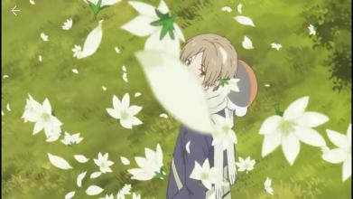
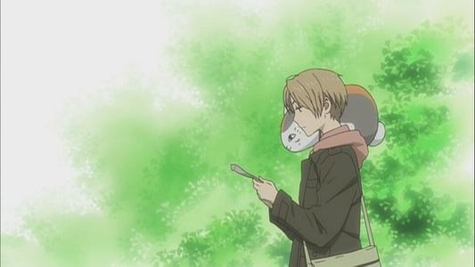

——若不能为神仙，那就变成妖怪吧
上帝说要有光，世界便有了光。绿川说光要打在茂盛的树丛上，绿色的树荫里住着恶作剧的精灵。光要从云层里透出来，铺在溪水和鹅卵石上。光要标志着每一条自行车骑过的小路，光要守护炊烟袅袅的村庄。要有树，绿色的大片的树，树边有供祠，大的小的有名的无名的神灵都得到平等的尊重。要有纯净的天空像海水一样流动。要有性格饱满的妖怪嬉笑怒骂。要有另一个平行的空间来盛下生命原始的脉动。
少年的喜悦来自当下和回忆，悲伤也来自当下和回忆；少年的喜悦来自世界和命运，悲伤也来自世界和命运。这些太大太抽象太形而上的词语，被轻缓的叙述编织成心事沉淀之后耳边响起的吟唱，随着心绪的浮动和展开渐渐浸润着每个人内心最温柔的角落。记忆里早已遗忘的片段又浮现出来，长大后遗失的心情和信仰原来一直在偷偷保存着小时候的自己被感动的原因和事件。那么究竟是哪些事件呢？虽然它们已经变成泛黄的书里缺失的页面，只有留下的痕迹透露着我们那时是真的大哭过或者难忘了很久，但可以肯定的是，我们曾经那么轻易地被打动过，也那么认真地相信和珍惜过。
我要怎样在这里回归绿川幸的主题，或者说回归《夏目友人帐》这部作品呢？夏天遇到了绿川幸，绿川幸的招待就是《夏目友人帐》。这三个名词已经让我迷失了方向，不知道是谁让大朵的郁金香开放，撒上红色的玫瑰花瓣，邀请我睡在里面。这个梦那么绵长，梦里有诗人低吟浅唱，还有很多活跃在传说里寿命比我们要长得多的居民。他们说，感谢你还理直气壮地相信童话、模糊不堪的回忆和被遗忘的故事。我说，感谢你们一直都在。
谢谢还有绿川幸。